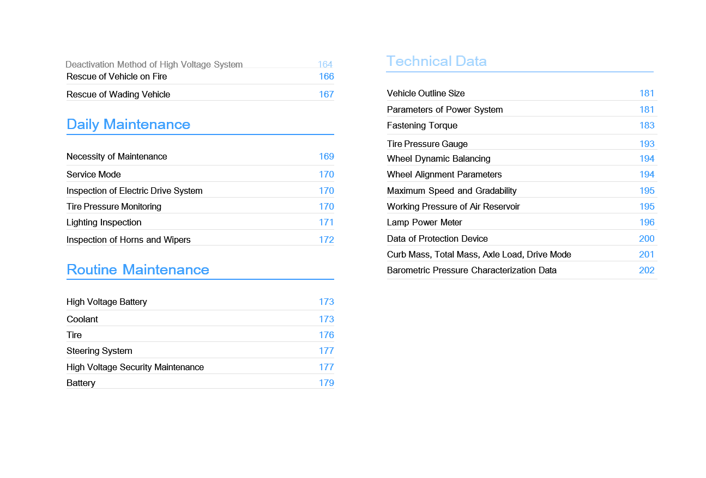

親愛的客戶：
感謝您選擇 Windrose 車輛。
首次駕駛前，請仔細閱讀本《車主手冊》。本手冊包含車輛功能、安全操作、保養要求及技術規格等重要資訊，熟悉相關內容有助於確保行車安全並使車輛保持最佳性能。
由於車輛配置及選配設備各異，交付給您的車輛可能與本手冊中的說明或圖示略有差異。Windrose 保留因持續改良產品而在不事先通知的情況下修改車輛設計、規格及配備的權利。
本手冊中的資訊、圖示及技術數據均以出版時為準，僅供參考，不構成合約承諾。
未經 Windrose 事先書面許可，本《車主手冊》的任何部分不得以任何形式複製或傳播。
注意：本手冊封面圖片及插圖僅供參考。實際車輛外觀及規格可能有所差異。
目錄



使用者須知
↑ 頂部駕駛前須知
本車為純電動牽引車。
日常操作與保養時，請遵守本《車主手冊》（以下簡稱「本手冊」）中所有警示及說明，以避免車輛損壞或人身傷害。
首次駕駛前，請仔細閱讀本手冊，熟悉車輛功能及操作要求。如在使用過程中遇到任何問題，請聯繫 Windrose 服務熱線。
本手冊版權歸 Windrose 所有。未經 Windrose 事先書面許可，本手冊任何部分不得複製、傳送或散布。
Windrose 保留因持續改良產品而在不事先通知的情況下更新本手冊內容的權利。如需取得最新車輛資訊，請參閱中控螢幕中的電子版《車主手冊》或 Windrose 行動應用程式。
Windrose 官方網站：
Windrose 服務熱線：您可在官方行動應用程式商店搜尋「Windrose」以下載應用程式。
備註縮寫詞首次出現時，以「全稱（縮寫）」格式標註，此後將直接使用縮寫。
警示說明
↑ 頂部駕駛前須知
本手冊使用以下信號詞及符號：
警告表示危險情況，若不予以避免，可能導致嚴重傷害或死亡。
注意
↑ 頂部注意表示可能造成車輛或其零組件損壞的情況。
備註
↑ 頂部備註提供額外的有用資訊或操作指引。
環境保護
↑ 頂部環境保護表示與環境保護或節能效率相關的資訊。
星號說明
↑ 頂部功能名稱後加星號（*）表示該功能僅適用於特定車型或選配配置。
圖示說明
↑ 頂部
此箭頭表示圖中物件的確切位置。
此箭頭表示圖中物件的移動方向。
此箭頭表示圖中物件的旋轉方向。
此箭頭表示圖中物件的翻折方向。
環境保護
↑ 頂部駕駛前須知
Windrose 致力於永續發展與環境保護。本車輛設計旨在提升能源效率、減少排放。您可透過負責任的駕駛方式及節能操作，為環境保護盡一份心力。
行車安全
駕駛前須知
請隨時遵守最大允許總質量及軸荷限制。切勿超載，超載可能導致車輛損壞、失控或人身傷害。
凡在碰撞事故中承受衝擊力的安全帶，即使外觀無明顯損壞，也應予以更換。
警告（續上頁）
警告
切勿在空檔滑行下坡。此舉會解除驅動馬達制動力，可能導致車輛失控。
駕駛前，請將座椅調至正確位置。坐姿不正確可能導致疲勞、座椅意外移位或車輛失控。請確保座椅位置允許正確使用安全帶。
安全帶是必要的安全裝置。所有乘員在車輛行駛時均必須正確佩戴安全帶。
駕駛時切勿將座椅靠背過度後傾。緊急煞車時，不正確的坐姿可能
降低安全帶的保護效果。
在以下任何情況下，車速不得超過 30 km/h：
進出非機動車道、鐵路平交道、急彎、窄路或橋樑。
迴轉、轉彎或下陡坡。
因霧、雨、雪、塵或冰雹造成能見度低於 50 m。
在結冰、積雪或泥濘路面行駛。
拖吊故障車輛。
↑ 頂部
注意在無線電天文觀測站附近行駛時，請保持安全距離。配備雷達的車輛可能對觀測站設備造成電磁干擾。
原廠零件
駕駛前須知
在以下情況下，Windrose 不提供零件保固：
未經授權的車輛改裝，尤其是涉及行車安全相關系統（例如高壓系統、電氣系統、煞車系統、轉向系統或 TBOX）的改裝。
篡改車輛 OBD 系統。
使用未經認可的零件或液體而導致安全風險或車輛損壞。
保固期內無法提供文件證明使用了認可液體。
未依保養要求在 Windrose 授權服務中心進行保養。
資料安全
↑ 頂部駕駛前須知
依據適用法律法規，Windrose 收集並處理車輛數據，包括位置資訊、駕駛行為數據、音視頻記錄及個人資訊。
Windrose 依據適用的資料保護法規及行業標準，採取適當的技術與組織措施保護上述數據。
車輛改裝
駕駛前須知
↑ 頂部改裝前所需文件
任何車輛改裝均須符合適用的技術及法規要求。改裝前，必須向 Windrose 提交相關技術文件。
文件至少應包含以下內容：
改裝車輛的用途及使用條件。
改裝後的車輛總質量及各軸軸荷。
改裝車輛的整體外廓尺寸（含作業狀態）。
車廂地板離地高度。
車廂安裝方式。
副車架結構示意圖。
車輛報廢
駕駛前須知
↑ 頂部不再符合行駛要求的車輛，必須依據適用環保法規進行處置。
車輛報廢及高壓電池回收必須由 Windrose 或其授權回收機構執行。
警告高壓電池處置不當可能引發火災或環境污染。切勿擅自拆解或丟棄高壓電池。
高壓電池回收
Windrose 將依據彼時適用的法律法規及市場條件，對高壓電池的容量及狀態進行測試並回收。
高壓電池回收：回收及後續處理應由 Windrose 或其指定的第三方回收機構執行。
高壓電池運輸：高壓電池應由專業運輸機構負責運送。請聯繫 Windrose 授權服務中心，通知專業回收機構進行處理。
警告
切勿隨意丟棄廢舊高壓電池，以免引發意外火災或嚴重的環境污染。
切勿將廢舊高壓電池轉交給其他單位或個人。擅自拆解高壓電池而造成的任何環境污染或安全事故，您須承擔相應責任。
節能駕駛
駕駛前須知
以下做法有助於最大化續航里程並提升能源效率：
保持穩定車速，避免急加速或急煞車。
定期保養，使車輛保持良好工作狀態。
切勿在空檔滑行，否則將導致電橋潤滑不足，進而損壞零組件。
冬季行車
↑ 頂部駕駛前須知
冬季行車準備
依據當地最低溫度選用優質冷卻液，冷卻液冰點應低於當地最低溫度。
隨時保持電池充足電量，以防電池在低溫下結凍。
冬季冷卻液使用
↑ 頂部在寒冷季節或車輛停放於寒冷環境時，應確保冷卻液的防凍性能。請使用 Windrose 推薦的冷卻液。
冬季行車注意事項
建議使用雪鏈或雪地輪胎。
避免高速時急加速、急煞車及急轉彎。
在冰雪覆蓋的路面上低速行駛，以確保良好的行車制動效果。
保持合理的車距（在雨雪天氣或結冰路面行駛時應增加
安裝雪鏈後，啟動車輛並觀察雪鏈是否鬆動或輪胎安裝是否正確。
↑ 頂部警告使用雪鏈時，嚴禁超過最大有效行駛速度，以免發生事故。
車距，因為雨雪天氣或結冰路面可能增加行車制動距離）。
雪鏈使用
駕駛前須知
使用雪鏈時，請注意以下事項：
建議在厚雪或結冰路面行駛時使用雪鏈。
雪鏈規格必須與車輛所安裝的輪胎尺寸及型號相符。
將雪鏈安裝於驅動軸的外側輪胎（兩側均需安裝）。
安裝或拆除雪鏈時，注意勿損壞輪胎。
注意
 在無雪無冰的長路段行駛時，請拆除雪鏈。
在無雪無冰的長路段行駛時，請拆除雪鏈。行駛過程中確保雪鏈不接觸或干涉任何車輛零組件。
僅在車輛停放於平坦地面時安裝或拆除雪鏈。
熱帶及高溫地區行車
駕駛前須知
駕駛前請檢查車輛狀況：
確認冷卻液液位在正常範圍內，並檢查是否有滲漏。
切勿將易燃物品（例如打火機、噴霧產品、香水）長時間放置在儀表板上或陽光直射的位置。高溫可能導致加壓容器破裂並引發火災危險。
行駛中請注意以下事項：
警示燈亮起時，請立即停止行駛並
聯繫 Windrose 授權服務中心。
注意胎壓及胎溫。如胎壓或胎溫異常，應立即停止行駛，讓輪胎自然冷卻。切勿以噴水或放氣方式為輪胎降溫降壓，否則容易加速輪胎老化與磨損，嚴重時可能導致爆胎。
行駛中若發生爆胎，應立即按下危險警示燈開關，雙手保持在方向盤9點及3點鐘位置不轉動，並間歇性踩踏煞車踏板，使車輛逐漸減速，同時警示其他道路使用者。
監控胎壓及胎溫。
如有異常，請在安全可行的情況下立即停車，讓輪胎自然冷卻。切勿以噴水或放氣方式為輪胎降溫，以免加速輪胎老化並增加爆胎風險。
留意儀表板上的指示燈及警示燈，如出現車輛相關故障指示燈或警示
在顛簸及濕滑路面行車
駕駛前須知
在顛簸及濕滑路面行駛時，請注意以下事項：
在顛簸路面上降低車速，以提升乘坐舒適性並減少懸吊及減震零組件的磨損。
在濕滑路面上降低車速，並輕踩煞車，以防失去牽引力及車輛側滑。
如車輛在濕滑路面上開始側滑，應使用行車煞車平穩減速，避免急打方向盤。
坡道行車
↑ 頂部駕駛前須知
上坡行車注意事項
在坡道起步時若車輛後溜，應立即踩下煞車踏板，拉起電子駐車煞車，然後重新啟動起步程序。
爬坡時保持低速平穩行駛，逐漸踩踏油門，避免急加速或急煞車。
下坡行車注意事項
下坡前先降低車速，使車輛以可控速度進入下坡路段。
切勿在空檔滑行下坡，此舉會解除驅動馬達制動力，可能導致車輛失控。
下坡前確認煞車系統工作正常。如懷疑有故障，請先排除問題再繼續行駛。
下坡時避免急打方向盤，以降低翻車風險。
長坡下行時，避免持續煞車。請採用適當的速度控制及制動技術，防止煞車過熱而導致煞車衰退。
安全缺陷通報
↑ 頂部駕駛前須知
如懷疑車輛存在安全相關缺陷，請盡快將車輛停放於安全地點，並立即聯繫 Windrose 客戶服務或 Windrose 授權服務站。
Windrose 將依據適用法律法規的要求，視情況發布安全通知、服務活動或召回。在歐盟境內，車輛安全召回依歐盟市場監管及型式認證框架處理，並與相關成員國之國家型式認證及市場監管主管機關協調辦理。請遵守 Windrose 提供的所有安全指示及服務活動要求。
Windrose 服務熱線：【待確認歐盟聯絡資訊】
Windrose 服務網站：【待確認歐盟服務網站】
授權服務網絡：【待確認歐盟服務網絡】
車輛外觀概覽
車輛識別

前方向燈／日行燈
位置燈 3. 全景天窗
4. 側置工具箱 5. 充電口

|
|
|
|
|
|
|---|---|---|---|---|---|
|
|
|
|
|
|
|
|
|
|
|
|
車輛內部概覽
車輛識別

|
|
2. |
|
3. |
|
|---|